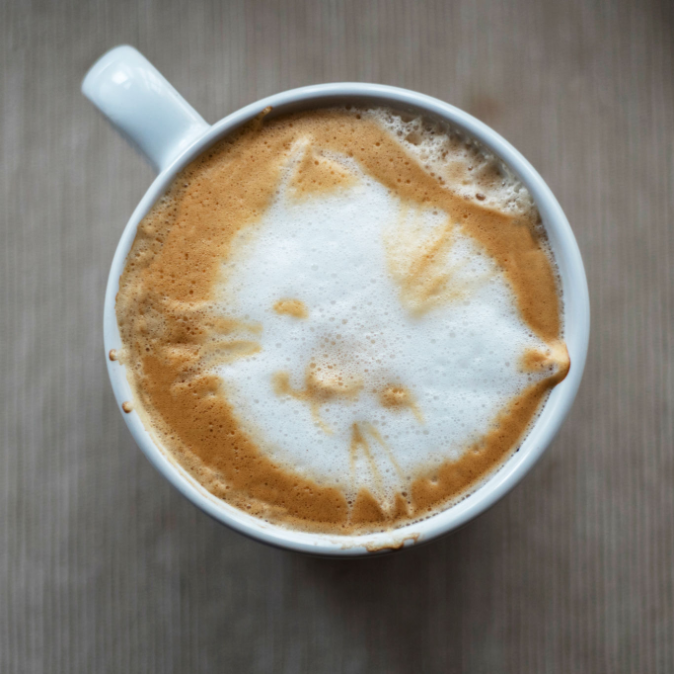

Sobre Nosotros:
『☕🥐』
Ubicada en el corazón de la ciudad, la Cafeteria Kirymomo ofrece un experiencia novedosa y divertida, un cafe de gatos con excelentes platillos y compañeros de cuatro patas , destinamos parte de nuestras ganancias a ayudar a gatos en situacion de calle, y si puede adoptar a uno de ellos.
Nuestra misión es: "Proporcionar un servicio de calidad, con altos estandares de higiene y dar un buen ambiente hacia nuestros comensales y peluditos🐾".
Ofrecemos diferentes platillos y menus, elaborados cuidadosamente y con los mejores estandares, para satisfacer a todos nuestros clientes sin importar dieta y gustos.
(El acceso a menores de 6 años esta restringido)
Nuestra Ubicación
Nos ubicamos en la siguiente direccion :
Servicios
- Excelente ambiente
- Platillos cuidadosamente seleccionados y con ingredientes de primera calidad, organicos y frescos
- Area verde
- Comedor y area con gatos